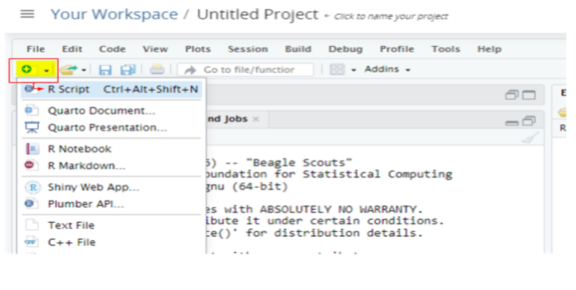
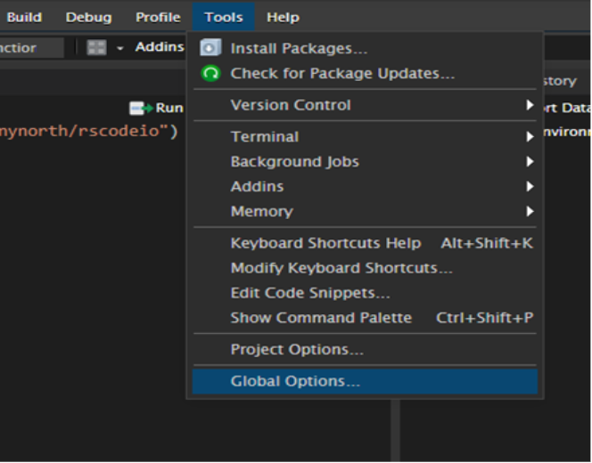
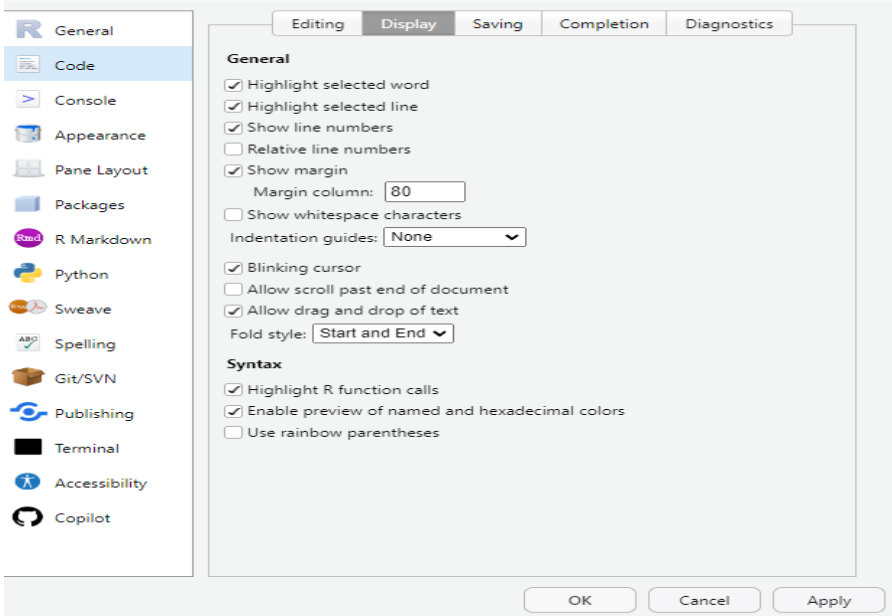
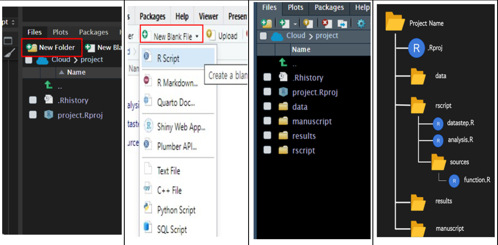
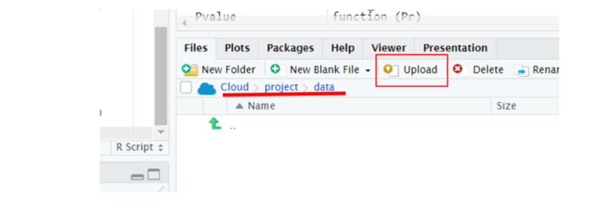
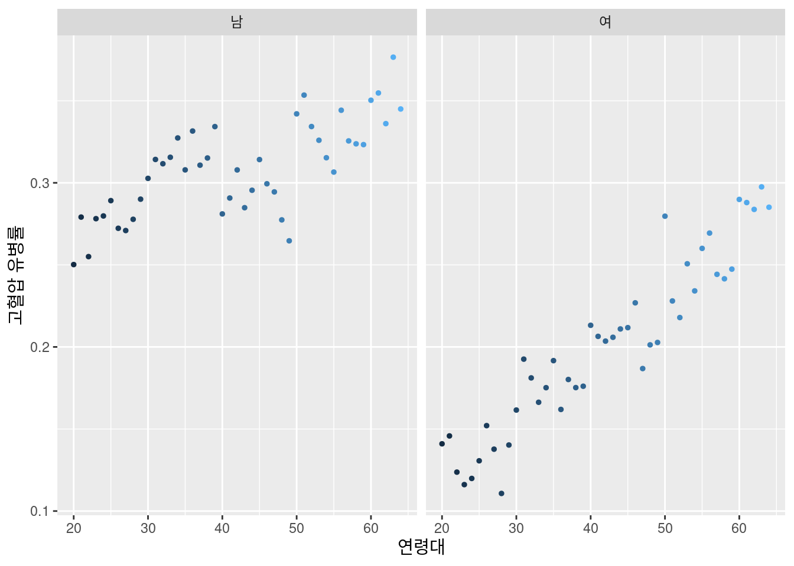
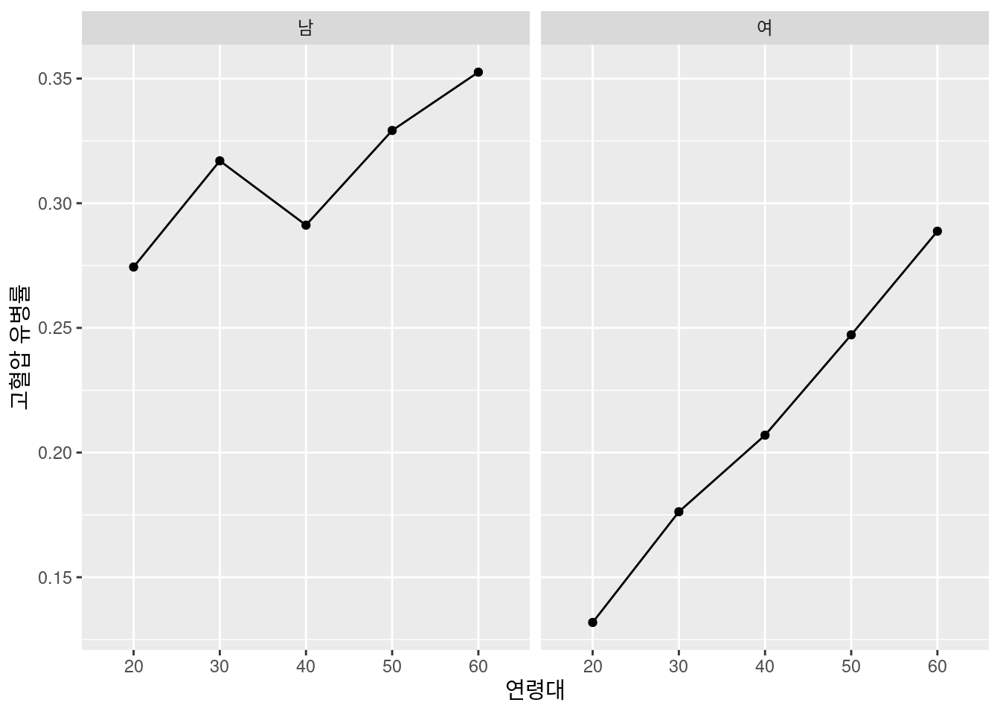
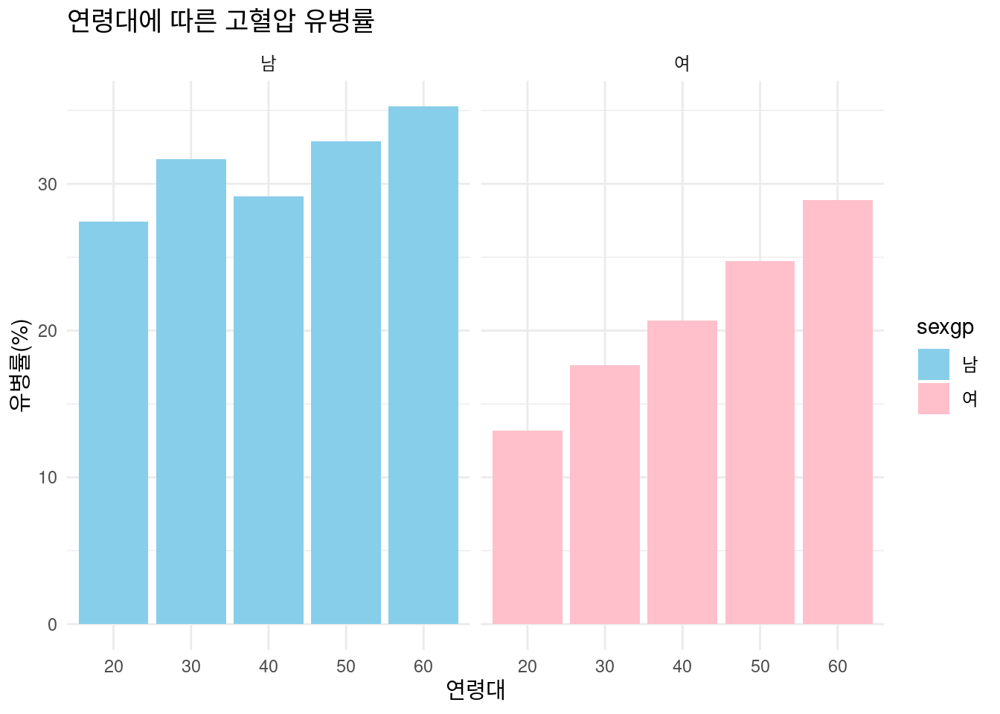
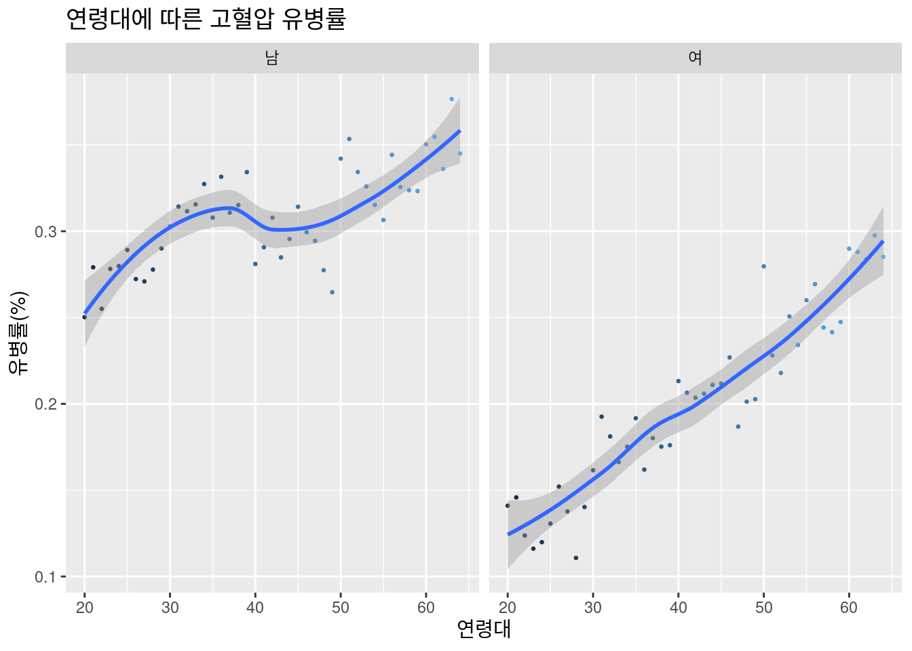

if(!require("tidyverse")) install.packages("tidyverse")5 R 기본 소개
5.1 R 소개
데이터 분석 및 통계 연구에 사용되는 강력한 프로그래밍 언어 및 소프트웨어 환경입니다. 데이터 처리, 분석, 시각화, 보고서 작성 등 다양한 작업을 수행할 수 있으며, 활발한 커뮤니티와 다양한 패키지를 통해 사용자의 요구에 맞는 기능을 확장할 수 있습니다.
5.2 R사용 방법
R server 사용 RStudio Cloud 무료 버전의 용량 제한으로 인하여, 원활한 실습을 위해 R server 제공
https://sehnr.org/rtutor
안내된 계정 사용
.Rproj : R프로젝트 파일로, 일관된 작업을 보장하고, 사용자별 설정을 저장할 수 있습니다. 현재는 우선 생성되어 있는 상태입니다.
새로운 R script 생성

- R기본 설정 기본 구성 설정하기 > Tools -> Global Options 
결과 도출을 잘하려면, 다음과 같은 설정을 선택해주어야 합니다. Code -> Display -> ☑ 
- R 사용 전 설정 및 R 프로그램 이해 다음과 같은 이름의 폴더를 생성합니다. 폴더는 ’New Folder’에서, R script는 ’New Blank File’을 클릭하여 새로 생성합니다.

폴더 별 사용 용도 data: 모든 원 또는 가공된 데이터 파일을 여기에 보관해야 합니다. rscript: 모든 r 스크립트가 저장되어 있어야 합니다.
- datastep.R: 데이터 정리, 변환 및 전처리를 합니다.
- analysis.R: 핵심 분석 방법(통계 테스트, 데이터 모델링 등)을 포함합니다.
- sources: 추가 스크립트 하위 폴더입니다.
- function.R: 서로 다른 스크립트에서 사용할 사용자 정의 함수를 정의해놓을 수 있습니다. results: plot, 테이블, 및 처리된 파일과 같은 모든 결과물을 여기에 저장합니다. manuscript: 프로젝트에 대해 작성 중인 보고서나 논문 초안, 메모 및 최종 버전을 저장합니다.
Data 준비

저장하는 위치(Cloud > project > data)를 제대로 파악하고 업로드해야 파일 찾을 때 편리합니다. 현재 파일 링크를 통해서 데이터를 불러올 것이기에 따로 업로드하지 않아도 됩니다.
- 시각화를 위한 R 패키지 다운로드 및 불러오기 R에서 코드를 실행할 때는 반드시 ctrl + enter를 눌러야 합니다.
require: 이 함수는 ‘tidyverse’ 패키지가 이미 설치되어 있고 R 세션에서 사용할 수 있는지 확인합니다.
!: 이 기호는 논리적 NOT을 나타냅니다. 이 함수는 require()의 결과를 반전시킵니다. 따라서 ’tidyverse’가 설치되지 않은 경우(즉, require()가 FALSE를 반환하는 경우) !.require()는 TRUE가 됩니다.
if(): 조건문으로, if 블록 안의 코드는 조건이 TRUE인 경우에만 실행됩니다. 이 경우 ’tidyverse’가 설치되지 않았다면 조건은 TRUE가 됩니다.
install.packages(“tidyverse”): 이 명령어는 ‘tidyverse’ 패키지를 설치합니다. ‘tidyverse’ 패키지가 아직 설치되지 않은 경우에만 실행됩니다.
R 패키지 설치
#basic requirement
if(!require("tidyverse")) install.packages("tidyverse")
if(!require("htmlTable")) install.packages("htmlTable")
if(!require("broom")) install.packages("broom")
if(!require("labelled")) install.packages("labelled")
#packages from github
if(!require("devtools")) install.packages("devtools")
if(!require("ggplot2")) install.packages("ggplot2")
library(devtools)
if(!require("tabf")) install.packages("jinhaslab/tabf", force = TRUE)
library(tabf)
if(!require("readxl")) install.packages("readxl")
library("readxl")- tidyverse: 데이터 시각화를 위한 ggplot2가 유명하며, 데이터 조작에 도움이 되는 dplyr과 tidyr도 있습니다.
- htmlTable: HTML 형식의 고급 테이블을 만들 수 있습니다. 웹 플랫폼에서 데이터를 표형식으로 표시해야 할 때 특히 유용합니다.
- broom: lm과 같은 R의 내장 함수의 지저분한 출력을 깔끔한 데이터 프레임으로 변환합니다. 통계 테스트나 모델의 결과를 시각화하고 싶을 때 유용합니다.
- ggplot2: 데이터 시각화를 위한 가장 유명한 R 패키지 중 하나입니다. 그래픽 문법을 기반으로 하며 복잡하고 사용자 지정 가능한 플롯을 만들기 위한 강력한 플랫폼을 제공합니다.
- tabf: GitHub에서 제공되는 패키지로, 테이블 서식 지정과 관련된 기능을 제공합니다.
- readxl: R에 엑셀파일을 불러올 때 사용하는 패키지입니다.
6 데이터 소개 및 준비
6.1 건강검진 데이터셋의 소개 및 구조에 대해 이해합니다.
- 범주형 변수 : 카테고리나 그룹으로 분류할 수 있는 변수입니다. 이 변수들은 수적인 의미를 가지지 않으며 단순히 분류하기 위한 목적으로 사용됩니다.
- 연속형 변수 : 연속적인 숫자로 표현되며, 사이에 무한히 많은 값이 존재할 수 있는 변수입니다. 이 변수들은 산수를 통해 양과 크기를 측정할 수 있습니다.
| 변수명 (code) | 변수내용(source) | 변수 값 |
| idv_id | 가입자 일련번호 | 숫자 |
| AGE | 연령 | 세, 숫자 |
| sido | 시도단위 | 시도, 숫자 |
| sex | 성별 | 문자 |
| height | 신장 5cm 단위 | cm, 숫자 |
| weight | 체중 5kg 단위 | kg, 숫자 |
| waist | 허리둘레 | cm, 숫자 |
| bp_high | 수축기 혈압 | mmHg, 숫자 |
| bp_lwst | 이완기 혈압 | mmHg, 숫자 |
| tot_chole | 총콜레스테롤 | mg/dL, 숫자 |
| triglyceride | 트리글리세라이드 | mg/dL, 숫자 |
| hdl_chole | 콜레스테롤(HDL) | mg/dL, 숫자 |
| ldl_chole | 콜레스테롤(LDL) | mg/dL, 숫자 |
| sgot_ast | 간기능검사(AST) | U/L, 숫자 |
| sgpt_alt | 간기능검사(ALT) | U/L, 숫자 |
| gamma_gtp | 감마지티피 | IU/L, 숫자 |
| smk_stat_type_cd | 흡연상태 | 문자 |
| drk_yn | 음주여부 | 문자 |
| hchk_oe_inspec_yn | 구강검진수검여부 | 문자 |
| crs_yn | 치아우식증유무 | 문자 |
| tth_mms_yn | 결손치유무 | 문자 |
| odt_trb_yn | 치아마모증유무 | 문자 |
| htn | 고혈압여부 | 문자 |
| dep | 부서 | 문자 |
| job | 직종 | 숫자 |
| BMI | 비만도 | 숫자 |
6.2 R을 사용하여 데이터를 불러오고 기본적인 탐색을 진행합니다.
- 데이터 불러오기 R에 저장해둔 데이터를 현재 분석을 진행하기 위해 데이터를 준비합니다.
data1 = readRDS("data/healthcheck.rds")- readRDS(): 이 함수는 R에서 .rds 파일을 읽는 데 사용됩니다. .rds 파일은 R에서 데이터를 저장하는 특별한 파일 형식입니다.
- data1 = : 불러온 데이터를 data1이라는 이름의 변수에 저장하는 부분입니다. 이렇게 저장하면 나중에 data1을 사용해서 데이터를 분석하거나 그래프를 그릴 수 있습니다.
6.2.1 select
데이터가 어떻게 구성되었는지 확인하는 과정이 제일 먼저 필요합니다. 우리는 select을 통해서 데이터 내에서 원하는 변수명만 확인해서 볼 수도 있습니다.
처음 다섯 개의 변수를 선택해 보겠습니다. head()는 위에 6행만 보여주는 것입니다.
data1 %>% select("idv_id", "AGE", "sex") %>% head() idv_id AGE sex
1 3823099 31 1
2 761158 37 1
3 3915038 33 1
4 3108477 30 1
5 4621083 36 1
6 3108819 38 16.2.2 filter
특정한 조건을 준 데이터형태를 알고 싶다면, ’filter’를 통해 특정 기준을 충족하는 행을 선택합니다. 예를 들어 성별 또는 특정 연령대에 따라 개인을 선택할 수 있습니다. 이를 위해 여러 조건문이 사용됩니다.
’==’는 같음을 의미합니다.
data1 %>%
select(sex, AGE) %>%
filter(sex == 1) %>% head() sex AGE
1 1 31
2 1 37
3 1 33
4 1 30
5 1 36
6 1 38‘&’는 ’AND’, ‘|’는 ’OR’의 의미이며, 한 번에 여러 조건을 적용할 수 있습니다.’!’는 부정을 의미합니다.
data1 %>%
select(sex, AGE) %>%
filter(sex != 2) %>%
filter(AGE >19 & AGE <60) %>% head() sex AGE
1 1 31
2 1 37
3 1 33
4 1 30
5 1 36
6 1 38’%in%’은 여러 조건을 나열하여 선택할 수 있어 명목 변수에 편리합니다.
data1 %>% select(sex, AGE) %>%
filter(sex %in% c(1,2)) %>%
filter(!AGE < 15) %>% head() sex AGE
1 1 31
2 1 37
3 1 33
4 1 30
5 1 36
6 1 38’is.na’는 데이터 내 변수들 중 NA누락값을 식별 가능합니다. Filter를 통해 변수 ’waist’의 ’NA누락값을 제외해보겠습니다. 그리고 새로운 데이터셋을 생성해보겠습니다.
우선 NA 누락값이 있는지 확인해야 합니다. tail()은 아래의 6행들을 보여줍니다.
data1 %>% count(waist) %>% tail() waist n
80 129 7
81 130 3
82 133 1
83 134 1
84 143 1
85 NA 5count()는 변수값의 n수를 보여주고, tail()은 가장 밑에 행부터 6개를 보여줍니다.
data2 = data1 %>% filter(!is.na(waist))
data2 %>% count(waist) %>% tail() waist n
79 128 7
80 129 7
81 130 3
82 133 1
83 134 1
84 143 1다시 누락값을 확인했을 때, NA값이 없어진 것을 확인할 수 있습니다.
6.2.3 mutate
’mutate’는 변수를 생성하는 데 자주 사용되는 기본 함수입니다. 이 함수에 익숙해지는 것이 중요합니다. mutate는 ifelse, case_when와 같은 다양한 조건문과 함께 자주 사용됩니다.
sex의 값인 ‘1,2’를 ’남’,‘여’으로 바꾸고, htn의 값인 ’0,1’을 ’정상’,’고혈압’으로 바꾸어서 data2에 새 변수들을 추가해보겠습니다.
data3 = data2 %>%
mutate(sexgp = case_when(
sex == 1 ~ '남',
sex == 2 ~ '여' )) %>%
mutate(htngp = case_when(
htn == 0 ~ '정상',
htn == 1 ~ '고혈압' ))
data3 %>% select(sexgp, htngp) %>% head() sexgp htngp
1 남 정상
2 남 정상
3 남 정상
4 남 정상
5 남 정상
6 남 정상“case_when”을 통해 나이를 10살 단위로 구분하여 agegp라는 새로운 변수를 생성하겠습니다.
data4 = data3 %>%
mutate(agegp = case_when(
AGE < 20 ~ "10",
AGE < 30 ~ "20",
AGE < 40 ~ "30",
AGE < 50 ~ "40",
AGE < 60 ~ "50",
TRUE ~ "60"
))
data4 %>% select(sexgp, htngp, agegp) %>% head() sexgp htngp agegp
1 남 정상 30
2 남 정상 30
3 남 정상 30
4 남 정상 30
5 남 정상 30
6 남 정상 30agegp 변수 생성시 case_when에서 “TRUE”는 앞서 설정한 조건 외에 해당하는 값인 60세 이상의 값들에 대해, ’60’로 생성하겠다는 의미입니다.
조건을 두개 이상 설정하여 BMI의 정상범위도 한번 설정해보겠습니다.
data5 = data4 %>%
mutate(bmigp = case_when(
BMI >= 18.5 & BMI <= 24.9 ~ "1.정상",
BMI < 18.5 ~ "2.저체중",
TRUE ~ "3.과체중"
))
data5 %>% select(sexgp, htngp, agegp, bmigp) %>% head() sexgp htngp agegp bmigp
1 남 정상 30 1.정상
2 남 정상 30 3.과체중
3 남 정상 30 1.정상
4 남 정상 30 1.정상
5 남 정상 30 1.정상
6 남 정상 30 3.과체중6.2.4 pivot longer
데이터를 분석하거나 시각화할 때, 데이터를 긴 형식(long format)으로 변환하는 경우가 많습니다. 긴 형식은 여러 변수의 값을 하나의 열로 모으고, 해당 변수의 이름을 다른 열에 저장하는 방식입니다. 이를 통해 데이터가 더 유연하게 사용될 수 있으며, 특히 ggplot2를 이용한 시각화나 그룹별 분석에서 유용합니다.
select을 이용해서 필요한 변수들만 선택한 후, pivot longer로 데이터를 변환해보도록 하겠습니다.
data5 %>%
select(idv_id, AGE, sexgp, agegp, bp_high, bp_lwst) %>%
pivot_longer(
cols = c(bp_high, bp_lwst), # 변환할 열 지정
names_to = "blood_pressure_type", # 변수명을 저장할 열 이름
values_to = "blood_pressure_value" # 변수 값을 저장할 열 이름
) # A tibble: 202,696 × 6
idv_id AGE sexgp agegp blood_pressure_type blood_pressure_value
<int> <int> <chr> <chr> <chr> <int>
1 3823099 31 남 30 bp_high 123
2 3823099 31 남 30 bp_lwst 75
3 761158 37 남 30 bp_high 131
4 761158 37 남 30 bp_lwst 77
5 3915038 33 남 30 bp_high 118
6 3915038 33 남 30 bp_lwst 78
7 3108477 30 남 30 bp_high 119
8 3108477 30 남 30 bp_lwst 73
9 4621083 36 남 30 bp_high 129
10 4621083 36 남 30 bp_lwst 75
# ℹ 202,686 more rows7 기초 데이터 분석
7.1 기초 통계 분석을 통해 데이터의 주요 특징을 파악합니다.
7.1.1 count
변수에서 변수값 수가 얼마나 있는지 파악해볼 필요가 있습니다. 먼저 고혈압의 n수와 성별의 n수를 파악해보겠습니다.
성별 n수 구하기
data5 %>% count(sex) sex n
1 1 49443
2 2 519057.1.2 summarise
‘summarise’은 열별로 정보를 결합하여 표시하는 함수입니다. ’summarise’과 함께 자주 사용되는 함수는 ’mean,’ ‘sd’ (standard deviation), ‘median,’ ‘max,’ ‘min,’ 등이 있으며 ’quantile’도 자주 활용됩니다.
data5 %>%
summarise(mean_age = mean(AGE),
std_age = sd(AGE)) mean_age std_age
1 44.56677 14.893637.1.3 group_by
데이터 탐색에서 group_by는 지정한 변수별 특정 결과값 도출시 자주 사용됩니다.
특히 연속형 변수의 경우 summarise, 명목형 변수의 경우 count와 함께 사용되어 변수별 n수 산출에 유용합니다. 고혈압 유무를 나타내는 변수 htn을 사용해 보겠습니다.
이때, 단순히 n수를 구하면, 고혈압이 많은지 판단하기 어렵습니다. 그래서 mutate를 이용해서 비율을 계산하여 남녀에서 고혈압의 비율이 어느정도인지 파악해보고자 합니다.
data5 %>%
group_by(sexgp) %>%
count(htngp) %>%
mutate(prob = n/sum(n)) %>%
filter(htngp == '고혈압')# A tibble: 2 × 4
# Groups: sexgp [2]
sexgp htngp n prob
<chr> <chr> <int> <dbl>
1 남 고혈압 15483 0.313
2 여 고혈압 11175 0.2157.1.4 chi square검정
이번에는 chi square검정을 r을 이용하여 수행해보도록 하겠습니다. [카이제곱 검정은 두 범주형 변수(예: 성별, 고혈압 여부)가 서로 관련이 있는지 알아보는 통계 방법이에요. 예를 들어, “남성과 여성의 고혈압 비율이 다를까?” 같은 질문에 답할 때 사용할 수 있습니다.]
두 범주형 변수 간의 독립성을 평가할 때 주로 사용됩니다. 이를 통해 연관성 여부를 간단하게 우선 확인해볼 수 있습니다.
# 2*2 교차표 생성
chi_table <- table(data5$sexgp, data5$htngp)
print(chi_table)
고혈압 정상
남 15483 33960
여 11175 40730# 카이제곱검정
chi_sq_test_result <- chisq.test(chi_table)
print(chi_sq_test_result)
Pearson's Chi-squared test with Yates' continuity correction
data: chi_table
X-squared = 1250.3, df = 1, p-value < 2.2e-16해당 결과를 통해서 피어슨 카이제곱 검정 결과, 성별(sexgp)과 고혈압 유무(htngp)는 통계적으로 매우 유의미한 연관성을 보이는 것으로 나타났습니다 (X2 =1250.3, df=1, p<0.001). 이는 남성과 여성 간 고혈압 유병률에 통계적으로 유의미한 차이가 존재한다는 것을 의미하며, 이러한 차이가 우연히 발생했을 가능성은 극히 낮다고 해석할 수 있습니다.
7.1.5 t test
이번에는 t test를 r을 이용하여 수행해보도록 하겠습니다. [t-검정(t-test)은 두 그룹의 평균이 서로 다른지 알아보는 통계 방법입니다. 예를 들어, “남학생과 여학생의 키 평균이 다를까?” 같은 질문에 답할 때 사용할 수 있습니다.]
filtered_data = data5 %>%
filter(!is.na(htn)) %>%
select(sex, AGE, htn) %>%
mutate(sexgp = case_when(
sex == 1 ~ "남성",
TRUE ~ "여성"
))
t_test_result <- t.test(AGE ~ sexgp, data = filtered_data)
t_test_result
Welch Two Sample t-test
data: AGE by sexgp
t = -9.8336, df = 100992, p-value < 2.2e-16
alternative hypothesis: true difference in means between group 남성 and group 여성 is not equal to 0
95 percent confidence interval:
-1.1035835 -0.7367736
sample estimates:
mean in group 남성 mean in group 여성
44.09550 45.01568 7.2 변수 간의 관계와 패턴을 탐색합니다.
데이터의 기본 구조를 파악하고자 표로 나타내려고 합니다. 표를 간단하게 만들 수 있는 tabf를 이용할 수 있습니다. ### TABLE 1
test1 = data5 %>%
select(htngp, sexgp, job, AGE, dep, bmigp)
tabf(test1,
stratas = "htngp",
catVars = c("sexgp","job", "bmigp","dep"),
conVars = c("AGE")
) %>%
addHtmlTableStyle(align ="ll") %>%
htmlTable()| variables | values | 고혈압 | 정상 | p.value | |
|---|---|---|---|---|---|
| 1 | AGE | 46.9±14.6 | 43.7±14.9 | <0.001 | |
| 2 | sexgp | 남 | 15483 (31.3%) | 33960 (68.7%) | <0.001 |
| 3 | 여 | 11175 (21.5%) | 40730 (78.5%) | ||
| 4 | job | 사무직 | 1459 (24.1%) | 4592 (75.9%) | <0.001 |
| 5 | 서비스,판매직 | 4716 (26.5%) | 13103 (73.5%) | ||
| 6 | 농어업 | 4766 (23.7%) | 15321 (76.3%) | ||
| 7 | 기술직 | 15717 (27.4%) | 41674 (72.6%) | ||
| 8 | bmigp | 정상 | 11049 (20.0%) | 44187 (80.0%) | <0.001 |
| 9 | 저체중 | 443 (11.9%) | 3283 (88.1%) | ||
| 10 | 과체중 | 15166 (35.8%) | 27220 (64.2%) | ||
| 11 | dep | 인사과 | 2676 (19.9%) | 10758 (80.1%) | <0.001 |
| 12 | 연구개발과 | 3663 (22.0%) | 12977 (78.0%) | ||
| 13 | 경영과 | 3769 (24.2%) | 11836 (75.8%) | ||
| 14 | 영업과 | 3932 (26.1%) | 11135 (73.9%) | ||
| 15 | 무역과 | 4066 (27.8%) | 10566 (72.2%) | ||
| 16 | 시설관리과 | 4228 (31.6%) | 9154 (68.4%) | ||
| 17 | 보관운송과 | 4324 (34.4%) | 8264 (65.6%) |
7.2.1 TABLE 2
직종(job)별 고혈압과의 연관성이 있는지 또는 얼마나 있는지를 알아보는 표를 만들고자합니다. 이는, 로지스틱 회귀분석을 통해 알아낼 수 있습니다.
mod0 = data5 %>%
glm(data=., family=binomial(),
formula = htn == 1 ~
job
)
mod1 = data5 %>%
glm(data=., family=binomial(),
formula = htn == 1 ~
job + agegp +sexgp + bmigp + dep
)
summary(mod0)
Call:
glm(formula = htn == 1 ~ job, family = binomial(), data = .)
Coefficients:
Estimate Std. Error z value Pr(>|z|)
(Intercept) -1.14656 0.03005 -38.152 < 2e-16 ***
job2.서비스,판매직 0.12468 0.03452 3.612 0.000304 ***
job3.농어업 -0.02115 0.03433 -0.616 0.537741
job4.기술직 0.17143 0.03148 5.446 5.14e-08 ***
---
Signif. codes: 0 '***' 0.001 '**' 0.01 '*' 0.05 '.' 0.1 ' ' 1
(Dispersion parameter for binomial family taken to be 1)
Null deviance: 116795 on 101347 degrees of freedom
Residual deviance: 116675 on 101344 degrees of freedom
AIC: 116683
Number of Fisher Scoring iterations: 4summary(mod1)
Call:
glm(formula = htn == 1 ~ job + agegp + sexgp + bmigp + dep, family = binomial(),
data = .)
Coefficients:
Estimate Std. Error z value Pr(>|z|)
(Intercept) -2.02189 0.04250 -47.572 < 2e-16 ***
job2.서비스,판매직 0.13358 0.03559 3.753 0.000175 ***
job3.농어업 -0.04185 0.03537 -1.183 0.236737
job4.기술직 0.14327 0.03244 4.416 1.01e-05 ***
agegp30 0.24489 0.02495 9.814 < 2e-16 ***
agegp40 0.29025 0.02460 11.798 < 2e-16 ***
agegp50 0.50865 0.02484 20.480 < 2e-16 ***
agegp60 0.66818 0.02096 31.884 < 2e-16 ***
sexgp여 -0.39114 0.01502 -26.045 < 2e-16 ***
bmigp2.저체중 -0.49899 0.05234 -9.534 < 2e-16 ***
bmigp3.과체중 0.75887 0.01504 50.466 < 2e-16 ***
dep2.연구개발과 0.14726 0.02949 4.994 5.92e-07 ***
dep3.경영과 0.27435 0.02954 9.288 < 2e-16 ***
dep4.영업과 0.37493 0.02942 12.743 < 2e-16 ***
dep5.무역과 0.44156 0.02931 15.067 < 2e-16 ***
dep6.시설관리과 0.62972 0.02947 21.369 < 2e-16 ***
dep7.보관운송과 0.74537 0.02957 25.204 < 2e-16 ***
---
Signif. codes: 0 '***' 0.001 '**' 0.01 '*' 0.05 '.' 0.1 ' ' 1
(Dispersion parameter for binomial family taken to be 1)
Null deviance: 116795 on 101347 degrees of freedom
Residual deviance: 110404 on 101331 degrees of freedom
AIC: 110438
Number of Fisher Scoring iterations: 4oddsTabf(mod0, mod1)| Table. OR(95%CI) for htn of 1 | |||
|---|---|---|---|
| Variables | Values | Model.I | Model.II |
| job | 1.사무직 | 1.00 (reference) | 1.00 (reference) |
| 2.서비스,판매직 | 1.13 (1.06-1.21) | 1.14 (1.07-1.23) | |
| 3.농어업 | 0.98 (0.92-1.05) | 0.96 (0.89-1.03) | |
| 4.기술직 | 1.19 (1.12-1.26) | 1.15 (1.08-1.23) | |
| agegp | 20 | 1.00 (reference) | |
| 30 | 1.28 (1.22-1.34) | ||
| 40 | 1.34 (1.27-1.40) | ||
| 50 | 1.66 (1.58-1.75) | ||
| 60 | 1.95 (1.87-2.03) | ||
| sexgp | 남 | 1.00 (reference) | |
| 여 | 0.68 (0.66-0.70) | ||
| bmigp | 1.정상 | 1.00 (reference) | |
| 2.저체중 | 0.61 (0.55-0.67) | ||
| 3.과체중 | 2.14 (2.07-2.20) | ||
| dep | 1.인사과 | 1.00 (reference) | |
| 2.연구개발과 | 1.16 (1.09-1.23) | ||
| 3.경영과 | 1.32 (1.24-1.39) | ||
| 4.영업과 | 1.45 (1.37-1.54) | ||
| 5.무역과 | 1.56 (1.47-1.65) | ||
| 6.시설관리과 | 1.88 (1.77-1.99) | ||
| 7.보관운송과 | 2.11 (1.99-2.23) | ||
- mod0
- dat1 %>% glm(…): 이 줄은 일반화된 선형 모델(glm)을 나타냅니다.
- data=., 는 파이프의 왼쪽에서 전달된 데이터 집합을 나타냅니다. 이 경우 dat4입니다.
- family=binomial( ): 모델이 이진 응답 변수(예: 예/아니오, 성공/실패)에 적합한 이항 분포를 사용하도록 지정합니다.
- formula = htn == 1 ~ job: 모델의 공식을 정의합니다. 이 모델은 예측 변수 job의 함수로서 htn이 1(고혈압)과 같을 확률을 모델링합니다.
- mod1: mod0과 유사하나 이번에는 모델에서 dep 외에 다른 변수들을 추가하고자 합니다.
- 모델의 목적:
- 두 모델 모두 고혈압(htn)와 직종(job) 간의 관계를 이해하려고 합니다.
- mod0은 고혈압에 대한 부서의 개별 효과를 분석합니다.
- mod1은 다른 변수들을 조정한 후 고혈압과 부서 간의 관계를 분석합니다.
8 데이터 시각화
8.1 기본적인 시각화 기술, 예를 들어 막대 그래프, 선 그래프 등을 배웁니다.
8.1.1 ggplot 종류
8.1.2 실제 그려보기
- 산점도 그래프 geom_point 성별에 따라 나이대별 고혈압을 얼만큼 앓고 있는지 한눈에 보기 위해 선그래프를 그려보겠습니다.
data5 %>%
group_by(sexgp, AGE) %>%
count(htn) %>%
mutate(prob = n / sum(n)) %>%
filter(htn == 1) %>%
ungroup() %>%
ggplot(aes(x = AGE, y = prob, color = AGE, group = sexgp)) +
geom_point(size = 1) +
labs(x = "연령대", y = "고혈압 유병률") + # x축과 y축 이름 추가
theme(legend.title = element_blank()) +
theme(legend.position = "none") +
facet_wrap(~sexgp)
- group_by(sex, AGE): 성별과 연령으로 데이터를 그룹화합니다.
- count(htn): 고혈압 발생 여부(htn 변수)에 따라 각 그룹의 빈도를 계산합니다.
- mutate(prob = n / sum(n)): 각 그룹에서 고혈압 발생 확률을 계산합니다.
- filter(htn == 1): 고혈압이 있는 경우만을 필터링합니다.
- ungroup(): 그룹화를 해제합니다.
- ggplot(aes(x = age_group, y = prob, color = age_group, group = sex)): ggplot 객체를 생성하고, x축에는 연령 그룹을, y축에는 고혈압 발생 확률을 매핑합니다. 선 색상은 연령 그룹으로 구분하고, group = sex로 각 성별별로 다른 그룹으로 구분합니다.
- geom_point(): 점을 추가하여 각 그룹의 데이터를 표시합니다.
- theme(legend.title = element_blank()) : 범례(legend)의 제목을 없앱니다.
- theme(legend.position = "none") : 범례의 위치를 삭제함으로써, 범례를 지웁니다. 범례를 나타낼 경우의 그래프는 아래와 같습니다.
- facet_wrap(\~sex): 성별에 따라 서로 다른 그래프 패널로 분할하여 시각화합니다.- 선 그래프 geom_line 성별에 따라 나이대별 고혈압을 얼만큼 앓고 있는지 한눈에 보기 위해 선그래프를 그려보겠습니다.
data5 %>%
group_by(sexgp, agegp) %>%
count(htn) %>%
mutate(prob = n / sum(n)) %>%
filter(htn == 1) %>%
ungroup() %>%
ggplot(aes(x = agegp, y = prob, group = sexgp)) + # Use interaction(dep, sex) for distinct lines
geom_point() +
geom_line() +
labs(x = "연령대", y = "고혈압 유병률") +
facet_wrap(~sexgp)
- geom_line(): 선을 추가하여 데이터 간의 경향성을 시각화합니다.- 막대그래프 동일한 현상을 막대그래프로 그려보겠습니다.
data5 %>%
group_by(sexgp, agegp) %>%
count(htn) %>%
mutate(prob = n / sum(n)*100) %>%
filter(htn == 1) %>%
ungroup() %>%
ggplot(aes(x = agegp, y = prob, fill = sexgp)) +
geom_bar(stat = "identity", position = "dodge") +
scale_fill_manual(values = c("skyblue", "pink")) + # 색상 설정
facet_wrap(~sexgp) +
labs(title = "연령대에 따른 고혈압 유병률", x = "연령대", y = "유병률(%)") +
theme_minimal()
- geom_bar(): 막대를 이용하여 성별별 연령그룹별 고혈압 발생 확률을 시각화합니다.- 추세선 그래프 동일한 현상을 추세선 그래프를 바탕으로 추세선 및 산점도 그래프를 그려보겠습니다.
data5 %>%
group_by(sexgp,AGE) %>%
count(htn) %>%
mutate(prob = n / sum(n)) %>%
filter(htn == 1) %>%
ungroup() %>%
ggplot(aes(x = AGE, y = prob, color = AGE, group = sexgp)) +
geom_point(size = 0.5) +
geom_smooth() +
labs(title = "연령대에 따른 고혈압 유병률", x = "연령대", y = "유병률(%)") +
theme(legend.title = element_blank()) +
theme(legend.position = "none") +
facet_wrap(~sexgp)
- geom_smooth(): 추세선을 활용하여 연속형 변수인 AGE의 성별별 추세를 시각화합니다.